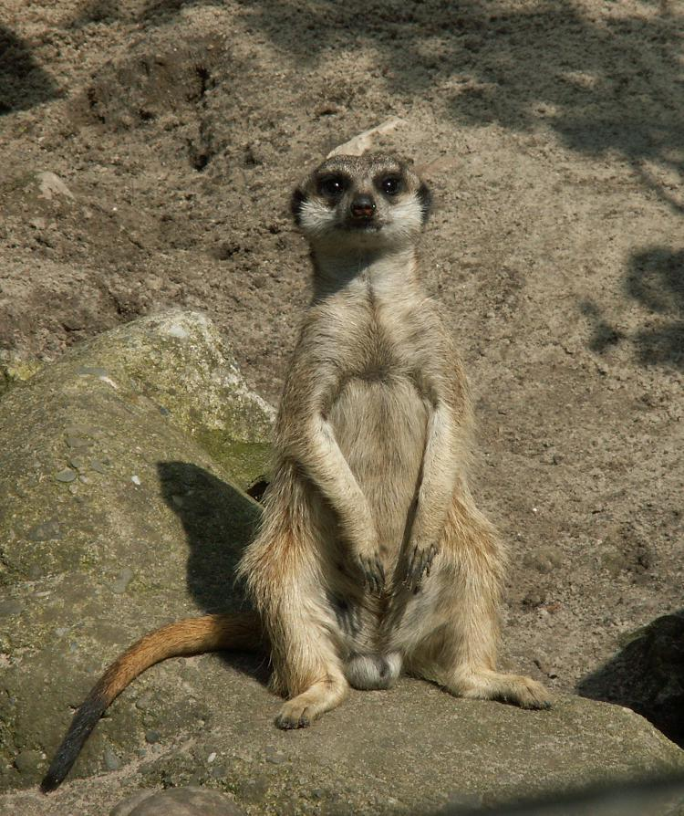
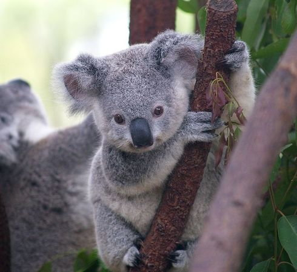

Zwierzęta
Panda Surykatka Koala Jeż
Panda
Panda wielka, niedźwiedź bambusowy (Ailuropoda melanoleuca) – gatunek drapieżnego ssaka z rodziny niedźwiedziowatych (Ursidae).
Panda wielka zamieszkuje lasy bambusowe na wysokości 1200–4100 m n.p.m. (zimą schodzi do 800 m n.p.m.). Jej przynależność do drapieżnych nie ulega wątpliwości, jednak w rzeczywistości odżywia się pędami roślin (głównie bambusa), nie gardzi też rybami i małymi gryzoniami. Zaliczenie pandy do zwierząt drapieżnych spowodowane jest budową jej układu pokarmowego. Jest on zbudowany jak u zwierząt spożywających pokarm mięsny. Z tego powodu panda musi jeść bardzo dużo, nawet do 40 kg dziennie, ponieważ panda trawi tylko 25% spożytego pokarmu (gdy na przykład krowy trawią 80% spożytego pokarmu). Przez długi czas była zaliczana do rodziny szopowatych jako odległy krewny pandy małej, jednak badania genetyczne wykazały, że panda wielka jest spokrewniona z niedźwiedziami, od których oddzieliła się we wczesnym rozwoju rodziny niedźwiedziowatych. Jej najbliższym krewnym jest niedźwiedź andyjski.
Według Międzynarodowej Unii Ochrony Przyrody panda wielka należy do zwierząt narażonych na wyginięcie, głównie wskutek stopniowego ograniczania obszarów dla niej dostępnych, ale także niskiej rozrodczości.

Surykatka
Surykatka szara, surykatka (Suricata suricatta) – gatunek drapieżnego ssaka z rodziny mangustowatych. W Afryce oraz krajach anglojęzycznych znana jest pod nazwą meerkat. Ta nazwa została błędnie zaczerpnięta z języka niderlandzkiego, a tłumaczyć ją można jako kot jeziorowy. W niderlandzkim surykatka zawsze była nazywana stokstaartje, a niderlandzkie słowo meerkat odnosi się do koczkodana.
Długość ciała samców 24,5-29 cm, samic 26–28,5 cm, długość ogona samców 20,5-24 cm, samic 19–23 cm, długość tylnej stopy 6,3–7,4 cm, samic 6,5–7,4 cm, długość ucha samców średnio 2,1 cm (1,9–2,3 cm), samic średnio 1,9 cm (1,7–2 cm); masa ciała samców 626–797 g, samic 620–969 g. Samice stają się znacznie większe i cięższe po zajęciu pozycji dominującej, osiągając ciężar ciała wynoszący średnio 750 g; u niedominujących samic masa ciała średnio wynosi 710 g. Odstawione od mleka młode osiągają średnio 1-4% masy ciała na godzinę podczas każdego ranka w okresie ich szczytowego magazynowania zasobów (35-75 dzień życia). Smukła sylwetka, wierzch ciała jasnopopielaty z czarnym, poprzecznym pręgowaniem. Głowa biała, uszy czarne. Ogon ciemno żółty o czarnym końcu.
Prowadzi dzienny tryb życia, zazwyczaj w stadach zajmujących określone terytorium. Liczące do 30 osobników stado składa się zwykle z dwóch lub trzech grup rodzinnych. Grupę rodzinną tworzy przystępująca do rozrodu para oraz ich potomstwo, które nie osiągnęło jeszcze dojrzałości płciowej. Dominujące samce są ojcami większości narodzonych młodych we wszystkich grupach. Na terenie otwartym surykatki kopią nory, lecz gdy jest to możliwe, korzystają ze skalnych szczelin.
Surykatki mają silnie rozwinięte zachowania socjalne. Wykazują wiele zachowań antydrapieżniczych, od sygnałów alarmowych po czynną, grupową obronę przed atakującym drapieżnikiem. W czasie żerowania co najmniej jeden z członków stada zajmuje pozycję w najwyższym punkcie terenu i obserwuje otoczenie. W razie niebezpieczeństwa strażnik wydaje odpowiedni do zagrożenia dźwięk alarmowy, na który stado reaguje stosownie do sytuacji.
Starsze surykatki uczą młode, jak obchodzić się ze zdobyczą, organizując dla nich „szkoły łowieckie”. Najpierw młoda surykatka dostaje martwe zwierzę (np. skorpiona) w celu poznania ofiary, następnie zaś żywe, nieuzbrojone zwierzę (np. skorpiona bez żądła). Dopiero na końcu młoda surykatka dostaje żywe, uzbrojone zwierzę (np. skorpiona z żądłem) w celu jak najszybszego zabicia go.
Surykatki mają podwyższoną odporność na jad niektórych gatunków węży i skorpionów.
Przez wiele miesięcy mogą żyć bez wody, gdyż przeżuwają dzikie melony, wilgotne korzonki i bulwy, które wcześniej wykopały.
Wszystkożerna, głównie owady i inne bezkręgowce, ale również gady, ptaki i ssaki uzupełnione pokarmem roślinnym.
Koala
Koala australijski (Phascolarctos cinereus) – gatunek ssaka z rodziny koalowatych (Phascolarctidae), nadrzewne zwierzę roślinożerne, zamieszkujące wschodnią Australię. Koala schodzi na ziemię tylko po to, aby przejść na kolejne drzewo. Żyje samotnie lub w niewielkich grupach złożonych z samca i kilku samic. Jest jedynym współcześnie żyjącym przedstawicielem rodzaju koala (Phascolarctos) i rodziny koalowatych (Phascolarctidae).
Koala australijski występuje we wschodniej i południowo-wschodniej Australii, gdzie jest rozpowszechniony, ale w nieco niejednolitej dystrybucji od okolic Cairns w północnym Queensland w dół wschodniej Australii, przez Nową Południową Walię, Wiktorię i poprzez południowo-wschodnią Australię Południową. Introdukowany na różnych wyspach w okolicach Queensland i Wiktorii oraz w kilku miejscach w Australii Południowej.
Większość swego życia spędza na najwyższych gałęziach drzew eukaliptusowych. Jest zwierzęciem aktywnym nocą.
Na podstawie badań przeprowadzonych w 2014 roku na Uniwersytecie w Melbourne ustalono, że koale australijskie chłodzą swoje organizmy schodząc na niższe partie drzew i przyciskając pokryty cienkim futrem brzuch do konarów, ponieważ ich temperatura może być niższa nawet o 7 °C niż temperatura powietrza. Badania przeprowadzone na Uniwersytecie w Sydney dowodzą natomiast, że koale australijskie chłodzą się na „drzewach schronieniach”, takich jak rzewnia, a nie eukaliptus, które są ich źródłem pokarmu.
Układ trawienny koali australijskiego umożliwia trawienie jedynie liści wybranych gatunków roślin. Koala preferuje eukaliptusy (Eucalyptus), ale uzupełnia też dietę liśćmi kilku gatunków z rodzajów Corymbia, Angophora, Lophostemon, banksja (Banksia), Leptospermum i Melaleuca. Dorosły osobnik zjada dziennie od 0,5 do 1 kg liści. Większość substancji mineralnych pobiera z soczystych liści. Wodę pije rzadko, dopiero gdy z powodu suszy zmniejsza się jej ilość w liściach, pije ją częściej.
Samce wydają w okresie godowym głośne ryki, które służą samicy przy wyborze partnera do rozrodu. Za donośność dźwięku odpowiadają długie struny głosowe, które przyczepione są do krtani znajdującej się obok trzeciego i czwartego kręgu szyjnego.
Okres godowy: grudzień – marzec. Ciąża trwa 25–35 dni. Młode rodzą się ślepe i nieowłosione, o wadze poniżej 1 g, dorasta następnie w torbie przez około 6 miesięcy. Podczas pierwszych 5 miesięcy karmi się mlekiem matki, w 6. miesiącu pobiera częściowo przetrawiony pokarm z jelita matki. Młode koala pozostają z matką (najczęściej uczepione jej grzbietu) do następnego okresu godowego. W tym samym czasie osiągają również dojrzałość płciową.
Jeż
Jeż (Erinaceus) – rodzaj ssaka z podrodziny jeży (Erinaceinae) w rodzinie jeżowatych (Erinaceidae).
Rodzaj obejmuje gatunki występujące w Europie i Azji (Rosja, wschodnie Chiny i Korea).
Długość ciała (bez ogona) 158–306 mm, długość ogona 17–42 mm, długość ucha 16–30 mm, długość tylnej stopy 34–54 mm; masa ciała 526–1400 g.
W kulturze od czasów starożytności rozpowszechnił się obraz jeża niosącego jabłko nabite na kolce. Nie ma on nic wspólnego z rzeczywistością, gdyż jeże są zwierzętami owadożernymi. Pierwszy taki obraz przedstawił Pliniusz Starszy w dziele „Historia naturalna”, twierdząc, jakoby jeże miały w ten sposób zbierać zapasy na zimę. W anonimowym tekście „Fizjolog” z II wieku jabłka zastąpiono winogronami i dodano chrześcijański morał – jeż kradnący owoce z winnicy jest alegorią diabła, pragnącego ukraść „owoce duszy”. Wersję z winogronami powtórzył Izydor z Sewilli w VII wieku w swoim dziele „Etymologie”.